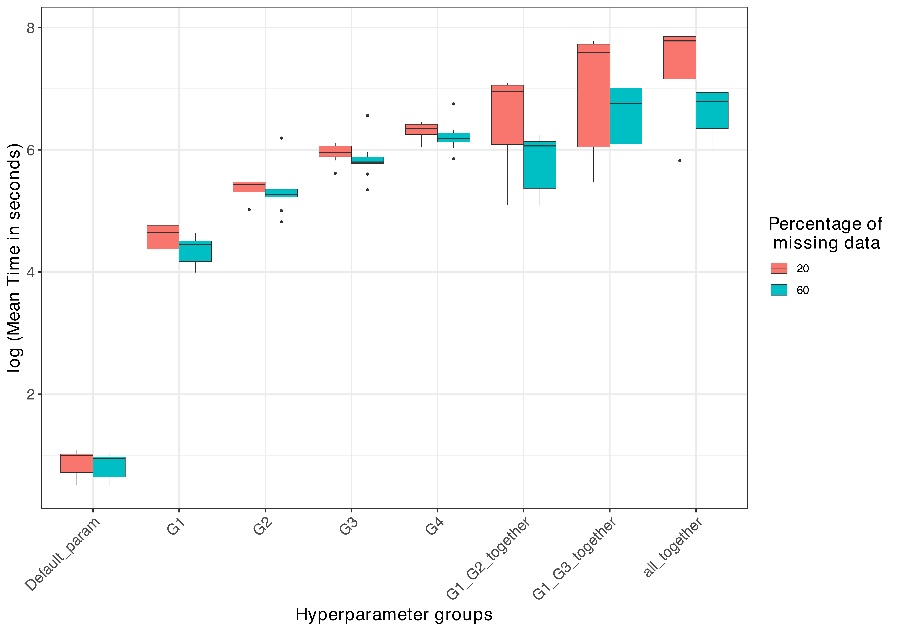

![]()

mice-xgb was executed using default parameters for comparative analysis. Bias is represented on the x-axis, with each parameter tuning group depicted on the y-axis. A vertical line at 0 indicates optimal bias proximity to zero.Tree-based imputation methods, such as Classification and Regression Trees (CART) and Random Forest (RF), have demonstrated improved accuracy in handling missing data, particularly when variables exhibit non-linear relationships. In our study, we developed another such method: XGBoost, implemented as an imputation model within the fully conditional specification framework of the mice package. Similar to mixgb, we integrated XGBoost predictions with donor-based matching using the observed data or predicted space of observed data. Our findings underscored that integrating XGBoost with donor-based selection yielded superior performance compared to using XGBoost predictions alone. Furthermore, we incorporated a Bayesian optimization-based parameter tuning function to improve the accuracy This function facilitates tuning parameters either for individual variables or separately for each variable in the dataset. Our comparative analysis indicated that while XGBoost demonstrated comparable performance to existing tree-based imputation methods under scenarios with low levels of missing data, CART and RF exhibited better accuracy and lower bias in scenarios with high levels of missing data. Moreover, XGBoost offers a diverse array of parameters, and optimizing these parameters is highly dataset-specific. Further research is necessary to ascertain whether specific parameter configurations can improve performance in contexts with high levels of missing data.
XGboost, Multiple Imputation, mice
This work has been funded by the Netherlands Organization for Scientific Research (NWO) under grant number 406.XS.01.104.
Missing data is a prevalent issue across various fields and can potentially introduce bias into statistical analyses. To address this challenge, imputation has emerged as a widely utilized technique (Little 1988). While single imputation may suffice for predicting values(Nijman et al. 2021), the ultimate objective of analysis often lies in drawing meaningful inferences from the data. To accommodate this goal, Rubin proposed the multiple imputation strategy (RUBIN 1976). This method entails replacing each missing value with a set of plausible substitute values. Within this framework, missing values within a variable are predicted using existing data of other variables. Subsequently, these predicted values are used to replace the missing ones, and the process is iteratively applied across all variables in the dataset, yielding a single imputed dataset. This procedure is then repeated to generate multiple imputed datasets. These datasets can be directly utilized in subsequent statistical analyses to derive parameters of scientific interest. Ultimately, estimates from all datasets are pooled into a single inference using Rubin’s rule, which integrates uncertainty among different imputed datasets(“Rubin, Page 76” 1987; Oberman and Vink 2024). The multiple imputation strategy has gained widespread acceptance due to its ability to restore natural variability and incorporate inherent uncertainty originating from missing data. By integrating information from correlated variables, multiple imputation preserves natural variability and addresses uncertainty by proposing various versions of imputed datasets. Variability between these imputed datasets can account for the imputation uncertainty. Moreover, this strategy has proven impactful in smaller datasets or those with a large number of missing values (Kang 2013).
Initially, two methods, Joint Modeling and Fully Conditional Specification (FCS), were introduced for imputation (Van Buuren et al. 2006). Joint modeling relies on the assumption of joint multivariate normality among all variables, which can be restrictive for real-life datasets that are highly heterogeneous (Schafer and Graham 2002). In contrast, FCS operates by imputing data on a variable-by-variable basis, providing flexibility in selecting appropriate imputation methods for each variable based on its characteristics. FCS has gained popularity for its ability to produce unbiased estimates with adequate coverage (Van Buuren et al. 2006). The quality of imputation results heavily depends on the statistical properties of the missing variable and the selection of an appropriate imputation model capable of capturing these properties. Moreover, Meng (1994) emphasized the importance of the imputation model being congenial to the downstream analysis model, highlighting the need for effective alignment between the two (Efron 1994). Often, data analysis models include relationships between different variables in the dataset. To ensure seamless integration between these steps, the imputation model should not only be selected according to each variable type but must also be able to capture the complex relationships among different variables in the data. However, available software packages such as mi and mice may not adequately capture these complex relationships by default. Therefore, it is crucial to manually specify all interactions between variable in order to obtain statistically valid imputed datasets.
In recent years, there has been significant interest in using machine learning algorithms for imputing missing data, owing to their extensive application in prediction tasks. It is crucial to ensure compatibility by employing machine learning-based imputation models. Additionally, traditional imputation methods often struggle to capture non-linear relationships between variables, presenting a significant challenge . Tree-based methods have emerged as a solution to this issue. The initial integration of random forest-based imputation models into packages like missForest and mice (mice-RF and mice-CART) has demonstrated their effectiveness in preserving complex relationships between variables compared to standard methods (Stekhoven and Bühlmann 2012). Another notable tree-based non-parametric method is XGBoost, specifically designed to capture intricate data relationships. In this context, we introduce XGBoost as a model for imputation within the framework of fully conditional specification. We anticipate that employing XGBoost for imputation will enhance accuracy, particularly in scenarios where traditional methods fail due to non-linear data relationships between variables.
The aim of this study is two fold. First, we introduce an imputation methodology based on the XGBoost algorithm, readily available in the mice package. Hyperparameter selection significantly impacts machine learning algorithm performance. We offer users flexible options to tune these hyperparameters: 1) tuning parameters on a single variable of interest and applying them to impute all variables in the dataset, 2) iteratively tuning hyperparameters using each variable as a target variable, or 3) utilizing default hyper parameters. We employ Bayesian optimization for hyperparameter selection as the technique is well-known for its efficiency in iteratively exploring the hyperparameter search space in an informed manner (Wulff and Ejlskov 2017). Second, we present simulation results comparing the imputation performance of traditional models (predictive mean matching, random forest, classification and regression tree) and previously proposed XGBoost implementation (mixgb) package (Deng and Lumley 2023) with our newly developed mice-xgboost method. Our results show that mice-xgboost perform significantly better than all other methods specifically to capture quadratic relationship and interaction between variables.
Recently, the mixgb package has extended the application of XGBoost beyond prediction, employing it as a strategy for missing data imputation. The mixgb package integrates the uncertainty and variability inherent in missing data by introducing two features. First, mixgb introduces a fusion of XGBoost with predictive mean matching (PMM) approach. PMM addresses the underestimation by finding donors of predicted values from observed data in a predicted space. Secondly, the mixgb package takes the benefit of sub-sampling parameter for training the XGBoost model. Moreover, mixgb is built on a non-iterative imputation framework while also allowing users to perform multiple iterations if needed. The MixGB workflow includes 1) sorting variables based on the missing proportion in each variable, 2) performing initial imputation (e.g., using mean, median or normal distribution), 3) using sub-sampling to train the XGBoost model, 4) making predictions, and 5) either returning the predicted value or identifying the best donor from the prediction space of observed data in the case of PMM. Deng et al. described that this approach effectively accounts for the variability of missing data and improves imputation performance compared to existing methods (Deng and Lumley 2023).
mice is an extensible package which is evident by subsequent addition of multiple tree-based imputation algorithms such as CART and Random Forest. This study extends the mission of integrating machine learning techniques with missing data imputation by specifically implementing XGBoost into the foundational framework of the mice package. Similar to the mixgb package, we have combined XGBoost predictions with donor-based selection (referred to as PMM in mixgb) to impute missing data. To accomplish this, one of the three “match.types” can be provided as an input option in mice.impute.xgb function: “predicted,” “predicted.observed,” and “original.observed”.
The “predicted” match type uses missing data predictions directly obtained from the XGBoost algorithm, analogous to setting pmm = null in mixgb.
The “predicted.observed” and “original.observed” match types operate on the assumption that the distribution of missing data points is same as the distribution of observed data (Buuren, n.d.).
For the “predicted.observed” match type, the missing data predicted values obtained form XGBoost are matched to the prediction space of observed data points for the corresponding variable. A set of closely matched donor points is selected (d = 5), and one value is randomly chosen from these donors to replace the missing data point. This method is equivalent to setting pmm = 2 in mixgb.
Conversely, the “original.observed” match type involves matching the predicted value of a missing data point to the original data, rather than the prediction space of observed data in order to select donors. This approach differs from pmm = 1 in mixgb.
Another notable feature of mice-xgb is its customizability in handling hyperparameters for the XGBoost model. User can opt to run imputation task with default parameters or input preferred parameters based on prior experience / literature search. Moreover, if user wants to experiment with hyperparameters, we have provided a companion function, “xgb_param_calc”, which is designed to extract hyperparameters specifically optimized for a given dataset. A traditional prediction problems revolves around predicting one target variables using other available variables. On contrary, in the context of imputation, all variables are iteratively imputed in a cyclic manner thus each variable act as a target variable, making it a multi-task problem. Therefore, users must decide whether to use the same set of parameters for all the imputation tasks or to specify separate set of hyperparameters for each target variable. mice XGboost provides both such options. User have the flexibility to first tune a uniform set of parameters for imputing all variables or separate set of hyperparameters specific to each variable and in the next step, provide these parameters to XGBoost imputation task. xgb_param_calc function employs Bayesian optimization and cross-validation to identify the optimal set of parameters that resulted in minimum testing mean absolute percentage error (MAPE) out of all the tested set of parameters. Users can opt to tune any combination of nine most widely tuned parameters, leaving the rest of the parameters to their default value. These parameters and their range are listed in Table 1. xgb_pram_calc function can be run with one of the three options 1) randomly select one variable as the target for tuning parameters, 2) tune hyperparameters using a user-selected variable as the target, or 3) obtain separate parameter values for all variables. Third approach is useful for handling complex relationships within the data, though it is more time-consuming.
| Parameter | Range |
|---|---|
| Learning Rate - Eta | 0 - 0.3 |
| Nrounds | 100 - 1000 |
| max_depth | 2 - 12 |
| Min_child_weight | 0 - 25 |
| Subsample | 0.5 - 1 |
| Colsample_bytree | 0 - 25 |
| Gamma | 1e-09, 10 |
| alpha | 1e-09, 100 |
| lambda | 1e-09, 100 |
The basic work-flow of the mice package includes three steps: initialization, iterative imputation and pooling. For a dataset Y with p incomplete variables Y = (Y1, Y2, …. , Y\(_p\)), Y\(_j\) denote one of the incomplete variable with j = 1,2,3,….p. Variable Y\(_j\) is split in observed (Y\(_j^{obs}\)) and missing part (Y\(_j^{mis}\)). Initialization process begins by replacing missing values Y\(_j^{mis}\) with plausible estimates. These initial values are randomly drawn from a distribution specifically modeled for missing data in each variable Y\(_j\). By default, miceinitiates five imputed datasets (m>1). The hth imputed data sets is referred as Y\(^(h)\) where h = 1, . . . , m. These imputed datasets are identical for observed data but differ in their imputed values. The variability among these imputations reflects the uncertainty associated with the plausible values of the missing data. In contrast, the initialization in mixgb generates identical initial complete datasets. However, mixgb utilizes the subsampling hyperparameter of the xgboost algorithm to incorporate uncertainty. Thus for each imputation, a different subset of data is used for imputation resulting in different predicted values, reflecting variability between imputations. However, the use of the subsampling parameter in mice-xgboost is optional. User may or may not tune the subsampling parameter along with other parameters depending on the dataset and the subsequent statistical question.
The next step, iterative imputation is now easy as all datasets are complete. Any statistical model can be employed, as it would be in standard statistical analysis outside the context of missing data. By default, miceuse five iterations thus iterative imputation starts with 5 datasets Y\(^m\) where m = 1,2,…5. For each imputation, one iteration involves cycling through all variables (j = 1,…., p) to replace placeholder missing values with estimates (Q) obtained from the imputation model. In mice-xgb, these estimates are the predictions from the XGBoost model. For each variable (Y\(_j\)), xgboost model is trained on the subset of data where target variable (Y\(_j\)) is observed. These observed values of Y\(_j\) act as a label (Y\(_j^{obs}\)) and all other variables in this subset of data are considered independent variables Y\(_{−j}^{obs}\) = (Y\(_1^{obs}\),…,Y\(_{j-1}^{obs}\), Y\(_{j+1}^{obs}\), . . . , Y\(_{p}^{obs}\)). Once model is trained, the trained model is fit on the missing data of Y\(_{j-1}^{mis}\), Y\(_{j+1}^{mis}\), . . . , Y\(_{p}^{mis}\)) to obtain the prediction of missing data points of Y\(_{j}^{mis}\) which is denoted as \(\hat{Y}_j^{mis}\). These predicted values (Q) are used to replace the initial placeholder values. The process is repeated for all variables j= 1,2,…p. After one complete cycle, placeholders from all variables are replaced with estimates (Q). This process is repeated for 5-10 iterations to ensure sufficient model convergence. Additionally, this entire procedure is performed separately for all 5 imputations to get 5 different datasets Y\(^(1,2,...,5)\). This iterative process ensures that the imputed values are progressively refined. However, user can choose to run only one iteration. The final step in the imputation process is pooling the estimates from different imputations. The pool function in miceis implemented using Rubin’s rules (RUBIN 1976) to facilitate pooling process.
Deng et al. highlighted that directly predicting missing values using the XGBoost algorithm can lead to an underestimation of variability between different imputations. To address this, they proposed integrating XGBoost predictions with a Predictive Mean Matching (PMM) inspired donor-based selection. PMM matches each missing value’s predicted value with closely matched observed values from the same variable (Yj), referred to as candidate donors. One donor is then randomly selected to impute the missing value. In the default settings of mice-xgb, missing values are replaced with direct predictions from the XGBoost model, represented as \(\hat{Y}_j^{mis}\) (match.type = “predicted”). However, if the user opts for alternative match.types such as “predicted.observed” or “original.observed,” the algorithm performs donor-based matching using the predicted values \(\hat{Y}_j^{mis}\) as the recipient space. With “predicted.observed” match.type, donors are chosen from the predictions of the trained model on the observed data \(\hat{Y}_j^{obs}\), analogous to pmm=2 in mixgb (without subsampling). For “original.observed” match.type, the donor set is obtained by matching the predicted values \(\hat{Y}_j^{mis}\) to the original observed data Y\(_j^{obs}\). Unlike mixgb , there is no equivalent option for pmm=1 in mice. The main distinction between mixgb’s pmm=1 and pmm=2 lies in the source of \(\hat{Y}_j^{obs}\): pmm=2 uses a subsample of the dataset, while pmm=1 trains on the complete dataset. However, with no subsampling and a single iteration, mixgb ’s pmm=1 and pmm=2 yield the same donor space. Since mice-xgb’s default setting employs the complete dataset for training and prediction, a separate method for pmm=1 is unnecessary.
mice-xgbMissing data imputation using mice-xgb with default parameters
Input of micefor xgboost algorithm consist of following options.
A dataset is represented by Y\(_{raw}\) with j=1,2,… p variables.
Number of Imputation (m = 5)
Number of Iteration (maxit = 5)
Imputation method (method = “xgb”)
match.type = “predicted” (default); available options: “predicted”, “predicted.observed”, “original.observed”
params = NULL (default option); available options: list of parameter (described in table 1); a list of list with variable names and set of parameter for each variable
The basic workflow of micestarts with identifying missing values in the data Y and storing their location in w matrix. For each variable, missing values in Y\(_{raw}\) is replaced by placeholder values obtained from distribution of each variable
For \(m = 1:5\):
\[ Y_{w,j}^m \leftarrow Y_{init} \]
For m = 1:5
For maxit = 1:5
For each missing variable j, Y is split in three different subsets to impute missing value (denoted below)
Y\(_j^{obs}\) ~ represents the observed data for j variable
Y\(_{-j}^{obs}\) ~ represents the data for all variables except j, where Y\(_j\) was observed.
Y\(_{-j}^{mis}\) ~ represents the data for all variables except j, where j was missing.
Y\(_j^{mis}\) ~ will be predicted using Xgboost algorithm and user selected match type.
First, the XGBoost model is trained on the data Y\(_\text{-j}^\text{obs}\).
\[ \hat{Y}_{j}^{obs} = \text{XGBoost}(Y_{-j}^{obs}) \]
Trained model (denoted as \(\hat{Y}_{obs}^{j}\) is used to get the predictions for missing values in Y\(^j\):
\[ \hat{Y}_{\text{j}}^{mis} = \text{XGBoost}_{\hat{Y}_{\text{j}}^{obs}}(Y_{\text{j}}^{mis}) \] After the initial prediction, algorithm proceed in one of the three direction
If match.type = “predicted” \[ {Y}_{\text{j}}^{mis[m]} = \hat{Y}_{\text{j}}^{mis} \] else if match.type = “predicted.observed”
\[ Y_{\text{j}}^{\text{mis[m]}} = \text{Donor value by matching } \hat{Y}_{\text{j}}^{\text{mis}} \text{ with } \hat{Y}_{\text{j}}^{\text{obs}} \]
else if match.type = “original.observed”
\[ Y_{\text{j}}^{\text{mis[m]}} = \text{ Donor value by matching } \hat{Y}_{\text{j}}^{mis} \text{ with } \text{Y}_{j}^{\text{obs}} \]
Imputed datasets Y\(^{imp}\) where \(\text{imp} = \{1, \ldots, m\}\)
In mice package, hyperparameter tuning can be performed using xgb_param_calc function
A dataset (Y\(_{raw}\)) with \(\text{j} = \{1, \ldots, p\}\) variables
response = index of target variable j
other available options: “all”: separately tune prameters for all variables “null”: randomly select one target variable and tune parameters
select_features = index of variables used as a feature for training
other available options: “all” or “null”: Use all parameters except target variable as feature for training
Number of bayesian iterations (iter)
fixed_param: Parameters and their values (if user want to fix any value other than default value and not tune these parameters)
\[ p_{\text{f}} = \{ p_{\text{f1}}, p_{\text{f2}}, \ldots, p_{\text{fN}} \} \]
\[ p_{\text{t}} = \{ p_{\text{t1}}, p_{\text{t2}}, \ldots, p_{\text{tN}} \} \]
Y\(_\text{raw}\) <- complete cases of Y\(_\text{raw}\)
If response = NULL:
If select_features = NULL or select_features = "all":
\[ Y_r = Y_{\text{j}} \leftarrow \text{Represents data of a randomly selected variable from } j \in 1, \ldots, p \]
\[ Y_{-r} = Y_{-\text{j}} \leftarrow \text{Represents data of all variables except } Y_j \]
if select_features = j+1, j+2
\[ Y_r \leftarrow \text{represents data of randomly selected one variable from } \{ Y_j \mid j \in \{1, \ldots, p\} \setminus \{j+1, j+2\} \} \]
\[ Y_{-r} \leftarrow \{Y_{j+1}, Y_{j+2} \} \]
if response = j:
if select_features = NULL or select_features = "all" \[
Y_r \leftarrow Y_j
\]
\[ Y_{-r} \leftarrow Y_{-j} \text{ represents data of all variables except } Y_j \]
if select_features = j+1, j+2
\[ Y_r \leftarrow Y_j \]
\[ Y_{-r} \leftarrow \{ Y_{j+1}, Y_{j+2} \} \]
if response = "all"
For \(j = 1, \ldots, p\):
\[ Y_r \leftarrow Y_j \]
\[ Y_{-r} \leftarrow Y_{-j} \text{ represents data of all variables except } Y_j \]
The list of parameters available in the tuning function are listed in Table 1.
Let \(\text{P}\) represent the complete list of parameters \(P = \{p_1, p_2, \ldots, p_N\}\).
Redefine the parameter space \(\text{P}_q\) by matching names of \(\text{P$_t$}\) (Parameters to tune) with \(\text{P}\) such that \(\text{P$_q$}\) is a subset of \(\text{P}\):
\[ \text{P}_q \leftarrow \{ p_1, p_2, \ldots, p_N \} \subseteq \text{P} \]
Randomly select ùëõ√ó 5 initial points for evaluation where \(n\) represents the number of tuning parameters \(\text{P}_q\)
Define K-fold cross-validation based objective function as follow
Split the Y dataset into \(K\) folds for cross-validation.
\[ \{(Y_{-r}^{(1)}, Y_r^{(1)}), (Y_{-r}^{(2)}, Y_r^{(2)}), \ldots, (Y_{-r}^{(K)}, Y_r^{(K)})\} \]
where each \((Y_{-r}^{(k)}, Y_r^{(k)})\) for \(k = 1, 2, \ldots, K\) represents a fold with \(Y_{-r}^{(k)}\) as the training data and \(Y_r^{(k)}\) as the label.
Initialization: Evaluate the objective function \(f(\mathbf{x})\) for generated (n*5) initial points
Surrogate modeling: Fit a surrogate function \(\hat{f}(\mathbf{x})\) to the initial observed data points.
Acquisition function: Acquisition function uses surrogate function to propose next set of parameters \((x_{next})\) by balancing exploration versus exploitation. In this study, Expected improvement is used as a criteria for acquisition function.
Evaluation: Evaluate next set of parameters \((x_{next})\) using objective function.
Update: Update the surrogate function \(\hat{f}(\mathbf{x})\) with the new data point \((x_{next},ùëì(x_{next}))\).
Iteration: Repeat step 3-5 until algorithm converges or maximum number of iteration has reached.
Hyperparameter values that returned minimum value of loss function (Mean Absolute Percentage Error).
The aim of this simulation study is to assess the efficacy of XBGoost in imputing missing data, particularly for capturing non-linear relationships. This study aims to address the following research questions:
In order to answer the above mentioned questions, we generated dataset of sample size (n = 1000) with two continuously predictor variable (X and Z) drawn form a bivariate normal distribution with \(\mu = [4, 1]\) respectively and covariance \(\Sigma\).
\[ \Sigma = \begin{pmatrix} 1 & 0.7 \\ 0.7 & 1 \end{pmatrix} \]
Outcome variable Y is continuous and is defined in the following model.
\[ y = 3x + z + z^2 + 3xz + \epsilon \]
\(\epsilon\) represents the random noise derived from a normal distribution with \(\mu\) of 0 and \(\sigma\) of 20. 100 simulated datasets were generated using the same model.
Next, for each dataset, we introduced varying proportions of missingness (20%, 40%, 60%, and 80%) using the Missing At Random (MAR) mechanism, specifically employing a right-tailed approach. This process resulted in a complete missing data cohort comprising 4 sets of 100 datasets each, totaling 400 datasets. The complete set of 400 datasets were utilized in a comparative simulation study. However, a subset of 10 datasets from the 20% and 60% missingness mechanisms each, was selected to evaluate the number of iterations and to determine the optimal hyperparameters for tuning. All instances of missingness in this study were generated using the ampute function in the mice package.
We conducted a comparative analysis of the mice-xgb imputation method against several state-of-the-art imputation techniques. These methods included the default settings of mice (Predictive Mean Matching), tree-based imputation models from mice namely, mice-RF (Random Forest) and mice-CART (Classification and Regression Trees) — and the XGBoost implementation from mixgb . All mice methods were run with the default settings of five imputations (m = 5). The default settings for the mixgb algorithm included five imputations (m = 5), one iteration (maxit = 1), and a subsampling approach to ensure variability between imputations. Both mice and mixgb were run with iteration = 1 and iteration = 5 to compare the effect of iteration. We also evaluated the impact of predictive mean matching of mixgb by running imputation model for all three setting (pmm = NULL, pmm = 1, and pmm = 2) and for two iteration settings (maxit = 1, maxit = 5).
The mice-xgb method was also run with the default settings of five imputations (m = 5) using all three implemented match.type settings: “predicted”, “predicted.observed”, and “original.observed”. mice-xgb was first run with default parameters. Additionally, the impact of hyperparameter tuning was investigated. To achieve this, we run the mice-xgb model with either default parameters or the tuned parameters obtained from the newly implemented xgb_param_calc function in the mice package.
The xgb_param_calc function was run with two input conditions:
“response = NULL” : One variable was randomly selected as the target variable, and the remaining variables were treated as independent variables. Algorithm returned a list of best performing values for the hyperparameters.
“response = all”: This option runs the hyperparameter tuning algorithm iteratively for all three variables and returns three seperate list of optimal hyperparameter values identified for each variable. These tuned hyperparameters were then input to the mice-xgb algorithm to evaluate their impact on imputation performance.
A Regression model \(y \sim 3x + z + z^2 + 3xz\) is applied to imputed datasets obtained from each imputation method. Estimates are extracted \(\hat{E}\) from the regression results and are compared with true estimates. The true estimates (E) are acquired by fitting the regression model to the complete dataset before generating missingness. The corresponding confidence intervals are denoted by CI.low and CI.high The accuracy of each imputation model is evaluated by computing the bias, coverage and width of the regression estimates.
Bias is defined as difference between true estimate and calculated estimate from imputed dataset (\(\hat{E}\) - E). Validity of imputation models is estimated by the coverage.
Coverage is defined as 1 if true estimate lies within the range of true confidence Interval, otherwise 0 i.e. \(\hat{CI.low}\) < E < \(\hat{CI.high}\).
Width is defined as \(\hat{CI.high}\) - \(\hat{CI.low}\). All three evaluation metrics were averaged over number of simulations (100) to get a single value result.
xgb_param_calc()A subset of data containing 10 simulated datasets from each of the 20% and 60% missing data cohorts was selected. The xgb_param_calc function allows users to tune nine widely used booster parameters, with the list and range of parameter values detailed in Table 1. In this study, multiple configurations were used to identify the optimal set of parameters. Hyperparameter tuning was initially performed with varying numbers of iterations (iter = 50, 75, 100) to evaluate the convergence of the algorithm. The algorithm was run with the input option response = “all”, which sequentially treats each variable in the dataset as the target variable and returns a list of parameters for all variables.
Identifying which parameters need to be tuned and which should be left to their default values is always a challenge. In XGBoost, it is recommended to start with eta and learning_rate, and if needed, proceed to tune tree-based parameters next, followed by regularization parameters. Based on this approach, we categorized the boosting parameters into three main groups.
We followed two approaches to find the optimal set of parameters
We sequentially included parameters in the tuning process. The xgb_param_calc function allows users to tune a specified set of parameters while keeping the rest at their default settings. Additionally, users can fix the value of certain parameters (other than the default value) and tune others. In the first cycle, we tuned the parameters for Group 1, i.e., “eta” and “nrounds,” without fixing any parameters, implying that all other parameters were left at their default values. In the subsequent iteration, we fixed “eta” and “nrounds” to their optimal values identified in the first cycle and tuned the Group 2 parameters by setting param_list = c(“max_depth”, “min_child_weight”, “subsample”) in the xgb_param_calc function. In the third iteration, we fixed the values obtained for both Group 1 and Group 2 parameters and tuned the Group 3 parameters by setting param_list = c(“gamma”, “alpha”, “lambda”). After tuning all the parameters, we re-tuned “eta” and “nrounds,” this time fixing all other parameters (Group 4).
Instead of sequentially adding parameters, we combined parameters from the groups described above into three possible combinations:
This approach allowed for comprehensive tuning of parameters to identify the optimal set for the XGBoost model. Once the optimal parameters were identified for each of the settings, we evaluated their impact by running the imputation model (mice.impute.xgb). The model was then further evaluated using a regression model, and evaluation metrics including bias, coverage, and width were calculated.
We first evaluated the number of iterations needed for better convergence of the Bayesian optimization model. The iteration plot showed that increasing the number of iterations did not change the pattern in the trend, suggesting that 50 iterations might be sufficient (Supplementary Data 1). Parameter tuning is a challanging task as the study involves 100 datasets and three different variables. To ensure convergence for all variables, it is important to note that increasing the number of iterations increases the run-time. Therefore, it is essential to determine the balance between the available computational resources and the improvement in performance.
XGBoost has many hyperparameters, and proper tuning of these parameters can significantly influence the performance of the boosting algorithm. Tuning of all the parameters is a complex and time-consuming task. In this section, we aim to identify the subset of parameters that is most relevant to the missing data imputation problem addressed in this paper. Hyperparameter tuning results are presented in Figure 1. We have plotted mean bias levels produced by each imputation method, with width used as a confidence interval around the bias estimates. Complete results are summarized in Table 2.
For 20% missingness, our analysis highlighted substantial improvements in bias reduction across various terms when employing parameter tuning models compared to default settings. Notably, all tuning approaches effectively minimized bias for the intercept, \(x\), and \(x:z\) interaction terms, underscoring their utility in enhancing accuracy. For the \(z\) term, results varied among models, with the G1, sequential tuning of G4, and G1_G2_together models proving most effective, significantly reducing bias compared to defaults. Sequential tuning of the G2 parameter notably reduced bias for the quadratic term \(z^2\). Next, we evaluated the width of these modesl. Width estimates of G1 and sequential tuning of G2 model generally mirrored width of default parameters, while sequential tuning of G3 and G1_G3_together showed increased width. In terms of coverage, we observed that running mice-xgb model with default parameters maintained high coverage across all terms and coverage also remained robust in parameter-tuned scenarios, except for slight reduction in coverage with G1_G3_together for the \(z\) term. These findings underscore the importance of parameter tuning in improving estimation accuracy and highlight trade-offs in bias, width, and coverage that researchers should consider when selecting tuning strategies.
For dataset cohort with 60% missingness, parameter tuning results were highly variable (Fig 2). mice-xgb with default parameter resulted in very small bias for \(z\) , \(Z^2\) and interaction term \(x:z\) and tuning parameter either increased the bias or even if there was slight decrease in bias observed in sequential tuning of G3 and G4, width of the bias estimate increased. However, we observed that width of G1_G2_together was either similar (minimal increase) or reduced for \(z\), \(Z^2\) and \(x:z\) with similar or improved coverage. Moreover, We observed that all parameter tuning groups except G1_G2_together decreased the bias for both intercept and \(x\) term as compared to running mice-xgb algorithm with default parameter. Although we observed increase in bias in G1_G2_together and all_together, width of both groups was similar or slightly reduced as compared to default parameter and other parameter tuning groups. All other tuning methods resulted in increased width compared to default parameter (Table 2).
The dataset cohort with 60% missing data exhibited substantial variability in parameter tuning outcomes (Fig 2). mice-xgb model with default parameter demonstrated minimal bias for \(z\), \(Z^2\), and the interaction term \(x:z\). Tuning parameters generally increased bias for these terms, and even in cases where sequential tuning of G3 and G4 resulted in slight decreases in bias, the width of the bias estimate expanded. In contrast, the G1_G2_together approach either maintained similar widths or reduced them for \(z\), \(Z^2\), and \(x:z\), while achieving comparable or improved coverage. For other two terms intercept and \(x\), all parameter tuning groups except G1_G2_together resulted in reduced bias compared to the mice-xgb model with default parameters. Despite observing increased bias with G1_G2_together and all_together approaches, the width of both groups remained similar or slightly reduced compared to defaults and other tuning methods. Conversely, although all other tuning groups exhibited reduced bias, this improvement was accompanied with increased width compared to default parameters.
Our study on a dataset with 20% missing data demonstrated that improving imputation accuracy does not necessarily require tuning a large number of parameters. Additionally, we observed distinct outcomes between sequentially tuning groups versus tuning parameters together. As the percentage of missing data increases, we found that the parameter tuning process becomes increasingly intricate. Therefore, a nuanced and dataset-specific approach to parameter tuning is essential. Generalizing parameter settings across diverse datasets with 60% missing data proves challenging due to inherent variations in dataset characteristics and complexities.
mice-xgb was executed using default parameters for comparative analysis. Bias is represented on the x-axis, with each parameter tuning group depicted on the y-axis. A vertical line at 0 indicates optimal bias proximity to zero.mice-xgb was executed using default parameters for comparative analysis. Bias is represented on the x-axis, with each parameter tuning group depicted on the y-axis. A vertical line at 0 indicates optimal bias proximity to zero.| method | term | Estimate_20 | true_vals_20 | cov_20 | bias_20 | width_20 | Estimate_60 | true_vals_60 | cov_60 | bias_60 | width_60 |
|---|---|---|---|---|---|---|---|---|---|---|---|
| G1 | x | 3.104 | 3.071 | 0.8 | 0.033 | 6.594 | 2.833 | 3.071 | 1 | -0.238 | 5.297 |
| G1 | z | -0.664 | 1.017 | 0.9 | -1.681 | 19.376 | 0.926 | 1.017 | 1 | -0.091 | 12.024 |
| G1 | I(z^2) | 0.406 | 0.848 | 0.9 | -0.442 | 5.962 | 0.639 | 0.848 | 1 | -0.209 | 3.315 |
| G1 | x:z | 3.592 | 3.046 | 0.9 | 0.546 | 6.434 | 3.215 | 3.046 | 1 | 0.169 | 4.048 |
| G2 | (Intercept) | -0.806 | -0.114 | 0.9 | -0.692 | 23.711 | 0.679 | -0.114 | 1 | 0.793 | 17.146 |
| G2 | x | 3.318 | 3.071 | 0.9 | 0.247 | 7.326 | 2.836 | 3.071 | 1 | -0.236 | 5.130 |
| G2 | z | 1.012 | 1.017 | 1.0 | -0.005 | 17.524 | 1.257 | 1.017 | 1 | 0.240 | 11.580 |
| G2 | I(z^2) | 0.734 | 0.848 | 0.9 | -0.114 | 5.799 | 0.691 | 0.848 | 1 | -0.156 | 3.374 |
| G2 | x:z | 3.051 | 3.046 | 0.8 | 0.005 | 6.165 | 3.111 | 3.046 | 1 | 0.064 | 3.865 |
| G3 | (Intercept) | -1.295 | -0.114 | 1.0 | -1.181 | 26.435 | -0.012 | -0.114 | 1 | 0.103 | 17.777 |
| G3 | x | 3.711 | 3.071 | 1.0 | 0.640 | 8.792 | 3.161 | 3.071 | 1 | 0.090 | 5.346 |
| G3 | z | 1.415 | 1.017 | 0.9 | 0.398 | 21.215 | 1.509 | 1.017 | 1 | 0.493 | 13.270 |
| G3 | I(z^2) | -0.102 | 0.848 | 1.0 | -0.950 | 6.230 | 0.333 | 0.848 | 1 | -0.515 | 3.683 |
| G3 | x:z | 3.052 | 3.046 | 0.9 | 0.006 | 7.620 | 3.064 | 3.046 | 1 | 0.018 | 4.461 |
| G4 | (Intercept) | 0.591 | -0.114 | 1.0 | 0.705 | 20.054 | 0.127 | -0.114 | 1 | 0.242 | 17.615 |
| G4 | x | 3.006 | 3.071 | 1.0 | -0.065 | 6.046 | 3.058 | 3.071 | 1 | -0.013 | 5.261 |
| G4 | z | 0.506 | 1.017 | 0.9 | -0.511 | 18.043 | 1.015 | 1.017 | 1 | -0.002 | 12.243 |
| G4 | I(z^2) | 0.000 | 0.848 | 0.9 | -0.848 | 4.940 | 0.423 | 0.848 | 1 | -0.425 | 3.482 |
| G4 | x:z | 3.427 | 3.046 | 0.9 | 0.381 | 5.823 | 3.216 | 3.046 | 1 | 0.170 | 4.103 |
| G4_eta | (Intercept) | 0.654 | -0.114 | 1.0 | 0.768 | 22.943 | 0.387 | -0.114 | 1 | 0.501 | 17.649 |
| G4_eta | x | 2.925 | 3.071 | 1.0 | -0.146 | 7.028 | 3.002 | 3.071 | 1 | -0.069 | 5.263 |
| G4_eta | z | 0.638 | 1.017 | 1.0 | -0.378 | 18.813 | 1.267 | 1.017 | 1 | 0.250 | 11.862 |
| G4_eta | I(z^2) | 0.287 | 0.848 | 0.9 | -0.561 | 5.594 | 0.384 | 0.848 | 1 | -0.464 | 3.613 |
| G4_eta | x:z | 3.355 | 3.046 | 0.9 | 0.309 | 5.963 | 3.152 | 3.046 | 1 | 0.106 | 4.107 |
| G1_G2_together | (Intercept) | 1.041 | -0.114 | 0.9 | 1.155 | 21.099 | 0.546 | -0.114 | 1 | 0.661 | 17.495 |
| G1_G2_together | x | 2.636 | 3.071 | 0.9 | -0.435 | 6.407 | 2.868 | 3.071 | 1 | -0.204 | 5.217 |
| G1_G2_together | z | -0.490 | 1.017 | 0.9 | -1.507 | 15.201 | 1.406 | 1.017 | 1 | 0.389 | 12.103 |
| G1_G2_together | I(z^2) | 0.356 | 0.848 | 0.9 | -0.492 | 4.524 | 0.731 | 0.848 | 1 | -0.117 | 3.556 |
| G1_G2_together | x:z | 3.730 | 3.046 | 0.8 | 0.684 | 5.108 | 3.056 | 3.046 | 1 | 0.010 | 4.170 |
| G1_G3_together | (Intercept) | 1.505 | -0.114 | 1.0 | 1.619 | 25.769 | -0.090 | -0.114 | 1 | 0.024 | 18.564 |
| G1_G3_together | x | 2.925 | 3.071 | 1.0 | -0.146 | 8.192 | 3.230 | 3.071 | 1 | 0.159 | 5.644 |
| G1_G3_together | z | 2.467 | 1.017 | 0.9 | 1.450 | 19.392 | 2.937 | 1.017 | 1 | 1.920 | 13.599 |
| G1_G3_together | I(z^2) | -0.378 | 0.848 | 0.8 | -1.225 | 5.444 | 0.402 | 0.848 | 1 | -0.446 | 3.810 |
| G1_G3_together | x:z | 3.033 | 3.046 | 0.9 | -0.013 | 6.684 | 2.640 | 3.046 | 1 | -0.407 | 4.736 |
| all_together | (Intercept) | -0.118 | -0.114 | 1.0 | -0.004 | 21.933 | 0.182 | -0.114 | 1 | 0.296 | 17.933 |
| all_together | x | 3.205 | 3.071 | 1.0 | 0.133 | 6.785 | 3.077 | 3.071 | 1 | 0.005 | 5.384 |
| all_together | z | -0.784 | 1.017 | 1.0 | -1.801 | 17.498 | 1.547 | 1.017 | 1 | 0.530 | 12.026 |
| all_together | I(z^2) | -0.066 | 0.848 | 0.9 | -0.913 | 5.100 | 0.486 | 0.848 | 1 | -0.362 | 3.843 |
| all_together | x:z | 3.755 | 3.046 | 0.9 | 0.708 | 5.871 | 3.051 | 3.046 | 1 | 0.005 | 4.051 |
We evaluated the difference in computational time required for each group of hyperparameter tuning. As expected, we found that running XGBoost with default parameters takes the least amount of time (Fig 3). As we increase the number of parameters, the process becomes more computationally expensive. Moreover, sequential parameter tuning (e.g., first tuning the G1 group and then, in the next cycle, fixing G1 parameters and optimizing G2 parameters) takes significantly less time compared to tuning the same set of parameters simultaneously (G1 and G2 together) (Fig 3). Consistently, we observed that the mean computational time required for the 60% missing dataset is lower than that for the 20% missing dataset. This might be due to the fact that only complete cases are used for hyperparameter tuning, and the 60% missing dataset has fewer complete cases comparatively (Fig 3).

In this simulation study, we included all datasets (100 simulated datasets, as described in the study design) for each of the 20%, 40%, 60%, and 80% missingness scenarios. We compared various state-of-the-art imputation models, including mice-PMM, mice-CART, and mice-RF, as well as a recently developed XGBoost-based imputation algorithm (mixgb ) with multiple configurations of the mice-xgb algorithm. The mice-xgb algorithm was run with three different parameter configurations, which included running the algorithm with default parameters, tuned parameters for a randomly selected variable, and tuned parameters for all variables. Each configuration was executed with three different match types (match.type = predicted, predicted.observed, original.observed). Hence, in total 9 different configrations of mice-xgb were evaluated. Additionally, we performed all mixgb and mice-xgb imputations with both single iteration (maxit = 1) and multiple iterations (maxit = 5) to evaluate the impact of iterative imputation when using machine learning for imputation. For the parameter tuning configurations of mice-xgb, we employed sequential tuning of the G2 parameters, as this approach generally resulted in reduced bias compared to the default parameters, particularly for the 20% missing data scenario.
We observed that XGBoost model although showed increased coverage in maxit 1, system is getting more conerged with five iterations (Supplementary table) thus we will focus on maxit = 5 results in this section.
We first evaluated the performance of various imputation models on datasets with 20% missing data. Our results (Fig. 4) indicated that the imputation models mice-PMM, mice-CART, mice-RF, mixgb (with pmm 1 and 2), and the mice-xgb configurations (AllParam_predicted.observed, ParamDefault_predicted.observed) achieved 100% coverage for all terms, while mice-xgb with Random_predicted.observed achieved 99% coverage for all the terms. Other imputation models, including mixgb (no pmm) and mice-xgb (predicted and original.observed for all three parameter configurations), showed comparatively lower coverage. Additionally, CART and mice-xgb:Random_predicted.observed (coverage: 0.99) exhibited very similar and minimal bias for all terms except for the term \(Z^2\), where mice-PMM demonstrated less bias. Between the two methods, CART had a narrower width. The broader width observed in mice-xgb:Random_predicted.observed is expected, as it results from the additional variability introduced by tuning the subsampling parameter within the G2 group. mice-RF displayed slightly more bias than CART and Random_predicted.observed but with increased width. mixgb (with pmm) and ParamDefault_predicted.observed produced very similar results; although these three methods showed slightly more bias compared to CART and RF, Random_predicted.observed, they had the narrowest width. These findings underscored that when dealing with lower proportions of missing data, it may not be essential to tune all variables comprehensively. Instead, randomly tuning a single parameter can yield improved imputation results (Supplementary table).
When the missingness percentage was increased to 40%, significant differences in coverage among various imputation methods were observed (Fig 5). mice-RF consistently achieved the highest coverage with a perfect score of 1 across all terms evaluated. Similarly, mice-CART, mice-PMM, and mice-xgb using the AllParam_predicted.observed configuration also showed excellent coverage, ranging from 0.99 to 1. mice-xgb with Random_predicted.observed and ParamDefault_predicted.observed configurations exhibited slightly lower but still strong coverage rates, ranging between 0.96 and 1. In contrast, Mixgb-PMM2 demonstrated better coverage (0.95 to 0.99) compared to Mixgb-PMM1 (0.94 to 1). However, other methods, including mixgb without PMM and mice-xgb with match.type set to predicted and original.observed for all parameters configurations, consistently resulted in poorer coverage outcomes. Next, we evaluated the bias and width of the models that showed more than 95% coverage. Among these methods, we observed that mice-CART and mice-xgb:ParamDefault_predicted.observed exhibited the least bias in the intercept and \(x\), both with a coverage of 1. However, for the \(z^2\) term, mice-PMM (coverage: 1) demonstrated very small bias, alongside mice-CART (coverage: 0.99) and mice-xgb:ParamDefault_predicted.observed (coverage: 0.98). For the \(x:z\) term, mice-RF (coverage: 1), mice-CART (coverage: 0.99), and ParamDefault_predicted.observed (coverage: 0.98) exhibited the lowest bias. For the \(z\) term, mice-xgb:ParamDefault_predicted.observed (coverage: 0.96) and mice-RF (coverage: 1) showed very little bias. Although AllParam_predicted.observed (coverage: 1) also showed the least bias in z term, it had the widest width. In all five terms, mice-xgb:ParamDefault_predicted.observed had slightly more bias than CART/RF, but it consistently exhibited narrower width compared to the other top-performing methods. Furthermore, mixgb with pmm always produced the narrowest width compared to all methods, but this was often accompanied by reduced coverage and increased bias. Overall, we observed that mice-xgb:predicted.observed strikes a balance between these two strategies, with coverage and width between those of mice-CART/RF and mixgb-pmm. Moreover, these findings also suggest that it may not always be necessary to tune hyperparameters, as default parameters can sometimes yield better imputation results (Fig 5).
When the missingness percentage was increased to 60%, we observed greater variability in coverage plots among different imputation methods (Fig 5). State-of-the-art methods such as mice-PMM, CART, and RF consistently achieved coverage rates exceeding 95%. Specifically, mice-RF showed coverage between 0.98 and 0.99, CART between 0.96 and 0.99, and mice-PMM between 0.95 and 1. In contrast, mice-xgb with ParamDefault_predicted.observed, AllParam_predicted.observed, and Random_predicted.observed exhibited coverage ranging from 0.93 to 0.97, 0.91 to 0.95, and 0.92 to 0.96, respectively. mixgb demonstrated coverage of 0.84 to 0.91 in pmm-1 configurations and 0.89 to 0.96 in pmm-2 configurations. However, other configurations of mice-xgb (with match.type set to predicted and original.observed) and mixgb without PMM showed notably lower coverage between 0.41 and 0.75 (Fig 5).
Among the imputation methods achieving more than 95% coverage, we observed that out of 75 observations (9 configurations for mice-xgb, 3 configurations for mixgb-pmm, and 3 configurations for other mice methods, totaling 15 configurations multiplied by 5 terms), only 19 observations met this criterion consistently. mice-PMM, CART, and RF consistently demonstrated high coverage across all five terms evaluated. However, for the \(Z^2\) term, mixgb-pmm2, ParamDefault_predicted.observed, and AllParam_predicted.observed also showed high coverage (>95%), albeit with higher bias compared to CART/RF and wider intervals. Similarly, for the \(Z\) term, mice-xgb with Random_predicted.observed achieved high coverage, yet exhibited bias levels between those of CART and RF, alongside broader intervals (Fig 6).
When the missingness was increased to 80%, we observed a decline in coverage across all methods. However, CART (0.97 - 0.99), RF (0.92 - 0.99), and mice-PMM (0.89 - 0.99) still exhibited the highest coverage compared to XGBoost models (Fig 7). Notably, mice-xgb with match.type = “predicted.observed” consistently showed better coverage than other match types, with coverage ranging between 0.68 and 0.94 for the 80% missingness scenarios. mixgb models with PMM showed coverage of 0.62 to 0.87 for PMM2 and 0.53 to 0.74 for PMM1. In contrast, mixgb without PMM and mice-xgb with match.type = “predicted” and original.observed displayed even lower coverage rates. Overall, the simulation results indicated superior performance of existing tree-based imputation methods compared to the XGBoost algorithm with default settings. However, the performance of XGBoost with tuned parameters was notably poorer, which aligns with the inconsistent results observed during the parameter tuning phase.
Figure 4: Simulation results for 20% missingness. Imputation method showing coverage near to 1 and bias close to 0 indicate optimal results. The term “Random” denotes random selection of a variable as the target for hyperparameter tuning. “Allparam” signifies sequential tuning of hyperparameters across all variables. Within the XGBoost algorithm, “Predicted,” “predicted.observed,” and “original.observed” represent different match.type configurations used for integrating prediction and observation data
Figure 5: Simulation results for 40% missingness. Imputation method showing coverage near to 1 and bias close to 0 indicate optimal results. The term “Random” denotes random selection of a variable as the target for hyperparameter tuning. “Allparam” signifies sequential tuning of hyperparameters across all variables. Within the XGBoost algorithm, “Predicted,” “predicted.observed,” and “original.observed” represent different match.type configurations used for integrating prediction and observation data
Figure 6: Simulation results for 60% missingness. Imputation method showing coverage near to 1 and bias close to 0 indicate optimal results. The term “Random” denotes random selection of a variable as the target for hyperparameter tuning. “Allparam” signifies sequential tuning of hyperparameters across all variables. Within the XGBoost algorithm, “Predicted,” “predicted.observed,” and “original.observed” represent different match.type configurations used for integrating prediction and observation data
Figure 7: Simulation results for 80% missingness. Imputation method showing coverage near to 1 and bias close to 0 indicate optimal results. The term Random denotes random selection of a variable as the target for hyperparameter tuning. Allparam signifies sequential tuning of hyperparameters across all variables. Within the XGBoost algorithm, Predicted, predicted.observed, and original.observed represent different match.type configurations used for integrating prediction and observation data
We investigated the computational time required for various imputation methods. The future package in R was used to enable multi-threading, and all analyses were conducted utilizing six cores of the computer. For mice-xgb methods, the time taken for parameter tuning was included in the total imputation time before plotting. The results, presented in Figure 8 and Table 3, indicate that among the existing mice methods, mice-PMM (20% missingness: 0.10 seconds) required the least time, while mice-RF (20% missingness: 1.007 seconds) required the most time. However, the difference in imputation time between these methods was minimal. Implementations using XGBoost with default parameters in both mice-xgb and mixgb took longer than existing tree-based methods. Interestingly, mice-xgb with default settings (20% missingness: 1.87 - 2.29 seconds) was faster compared to mixgb (20% missingness: 2.73 - 3.62 seconds), likely due to subsampling used in mixgb (Fig 8; Table 3).
Parameter tuning significantly increased computational time relative to all other imputation strategies. Tuning a single parameter was less computationally intensive (20% missingness: 37.20 - 37.44 seconds) compared to tuning all parameters (20% missingness: 62.27 - 64.97 seconds). There was a negligible difference in computational time across varying proportions of missingness, and in some cases, higher missingness slightly reduced the computational time.
Methods | 20% missingness | 40% missingness | 60% missingness | 80% missingness |
|---|---|---|---|---|
PMM | 0.10120 | 0.10137 | 0.10135 | 0.10230 |
CART | 0.60204 | 0.62746 | 0.64086 | 0.63955 |
RF | 1.00735 | 1.01215 | 0.98927 | 0.99465 |
ParamDefault_predicted | 1.86751 | 1.97423 | 2.04909 | 2.05634 |
ParamDefault_predicted.observed | 2.06359 | 2.11853 | 2.10129 | 2.50600 |
ParamDefault_original_observed | 2.29017 | 2.56071 | 2.54580 | 2.50515 |
Random_predicted | 37.41400 | 31.75157 | 29.32893 | 28.45460 |
Random_predicted.observed | 37.20259 | 31.51315 | 29.68158 | 28.78559 |
Random_original.observed | 37.43501 | 32.01577 | 29.91800 | 25.92068 |
AllParam_predicted | 64.96625 | 68.36165 | 65.58093 | 59.37096 |
AllParam_predicted.observed | 64.64511 | 67.61957 | 65.66513 | 59.63626 |
AllParam_original.observed | 62.26728 | 65.17236 | 63.54737 | 57.60734 |
Mixgb - Pmm.Null | 2.72729 | 2.75106 | 2.77861 | 2.65826 |
Mixgb - Pmm.1 | 3.61647 | 3.51557 | 3.43545 | 3.48340 |
Mixgb - Pmm.2 | 3.44440 | 3.23028 | 2.99131 | 2.96996 |
Traditional methods for imputing missing data often encounter challenges when the variables demonstrate non-linear relationships. To address this limitation, tree-based methods such as Classification and Regression Trees (CART) and Random Forests (RF) were introduced, which exhibited improved accuracy in capturing complex data relationships. In recent years, the XGBoost algorithm has gained widespread acceptance due to its superior predictive power and flexibility. Deng et al. previously leveraged XGBoost for imputation purposes and developed the mixgb package for this specific application. In our study, we integrated XGBoost into the iterative framework of Multiple Imputation by Chained Equations (MICE). Similar to mixgb, we integrated three distinct matching strategies with XGBoost predictions. Importantly, mice-xgb offers extensive parameter tuning capabilities, allowing customization for various datasets and modeling objectives.
Our comparative simulation analysis revealed that among the three matching strategies proposed, mice-xgb performed best with the “predicted.observed” match.type Conversely, the other two strategies exhibited markedly poorer performance, necessitating further investigation into their potential use under variety of different conditions. Specifically, simulation results indicated that mice-xgb with “predicted.observed” strategy achieved comparable results to CART and RF. Under default parameter settings, mice-xgb showed narrower confidence intervals compared to CART/RF with same or marginal decrease in coverage (1-2%). Our study positioned mice-xgb: predicted.observed performance between CART/RF and mixgb-pmm, with CART/RF demonstrating the widest confidence intervals, minimal bias, and high coverage. Transitioning to mixgb, we observed a slight increase in bias alongside reduced coverage. However, as missing data proportions increased, both mice-xgb and mixgb exhibited significantly biased estimates, whereas CART/RF continued to perform better, even with 80% missing data.
Our exploration of parameter-tuned configurations for mice-xgb highlighted poor performance of the model. However, parameter tuning is a complex and it was not possible to evaluate hyperparameters for each of the 100 simulated datasets with varying levels of missingness. Future studies should prioritize evaluating the importance of individual parameters under increased missingness scenarios and focus on their specific optimization before generalizing to wide variety of datasets. We observed that parameter-tuned XGBoost models displayed wider intervals compared to other models and mixgb. This increased variability can be attributed to three main factors: variations in initial imputation, subsampling parameters, and donor-based selection. In contrast, mixgb use consistent initial imputations across datasets and variability in mixgb originate from subsampling and donor-based selection, which resulted in narrower width and less coverage. Future research could investigate the performance of mice-xgb by excluding subsampling parameters from the list of tunable parameters. It is important to clarify that our study did not emphasize the importance of any specific set of parameters but rather aimed to demonstrate the application of parameter tuning features in mice-xgb imputation. Furthermore, tuning parameters for each variable in the dataset (Allparam) is a computationally intensive task. Moving forward, exploring multi-task parameter tuning methods could offer a promising avenue for future investigations.
Although, mice-xgb parameter tuned configurations also showed poor performance in our study design, parameter tuning is a extensive process and need to be optimized for each dataset which was not possible for 100 simulated datasets with varying percentages of missingness. It will be better to evaluate importance of each parameters for increased missingness scenario and specifically tune those parameter. Moreover, we have exployed mean absolute percentage error as a loss function in XGBoost algorit that is being minimized in mice-xgb. For future studies, it will be a good idea to evalue other loss functions more adaptive to missing data problems. Furthermore, our approach utilized mean absolute percentage error as a loss function minimized in mice-xgb. For future investigations, exploring alternative loss functions tailored to missing data challenges could provide valuable insights.
In summary, mice-xgb represents a promising approach for missing data imputation, particularly with the predicted.observed strategy, showing competitive performance relative to established methods like CART and RF. However, further exploration is warranted to optimize its performance across varying degrees of missingness and to refine its applicability in different analytical contexts.